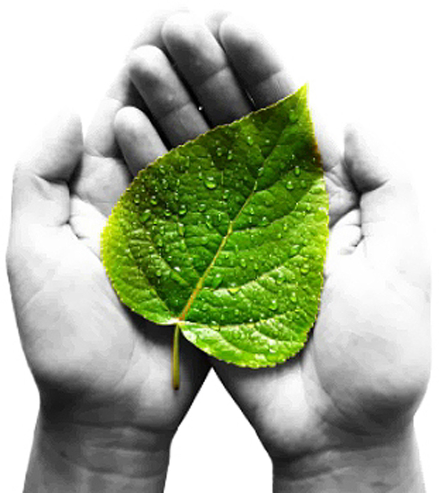

Our Mission
We Adapt to your business and Personal needs
It’s a concise statement that explains what the organization does now. At Trash Picker, our mission is to make digital clean India simple and accessible for local organizations here in the all India. This is what we are doing right now. It’s the foundation for company goals. What do we do? We make clean India simple and accessible for our clients.
Launch
India's prime minister Modi at a rally to promote Swachh Bharat Mission
Swachh Bharat Abhiyan campaign, launched on 2 October 2014 on birth anniversary of Mahatma Gandhi, aimed to eradicate open defecation by 2 October 2019, the 150th anniversary of the birth of Mahatma Gandhi, by constructing 90 million toilets in rural India at a projected cost of ₹1.96 lakh crore (US$27 billion).[15][16][17] The national campaign spanned 4,041 statutory cities and towns.[18][19] conceived in March 2014 at a sanitation conference organised by UNICEF India and the Indian Institute of Technology as part of the larger Total Sanitation Campaign, which the Indian government launched in 1999.[20]
